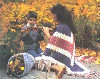
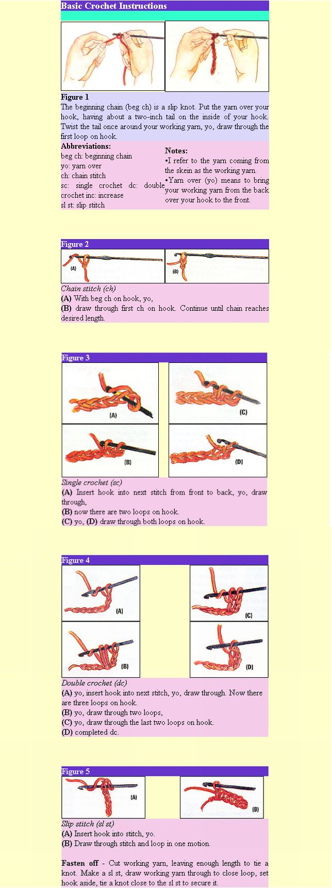

HANDWORKS
Learn the secrets of crochet.
Author and mountain woman Ella Jean Earl wears her self-made shawl outside during cooler weather.
Crochet, pronounced " kro-shay," is the art of using thread or yarn to interlock looped stitches with a hooked needle. For generations, this skill was commonplace, passed on from mother to daughter. However, as time passed, crocheting became less essential as modern conveniences began to make our lives easier. Although it has made a big comeback, you probably haven't had a chance to master the art, unless you were fortunate enough to have an experienced teacher.
Maybe you bought an instruction booklet that promised "easy to make" patterns, only to find your definition of "easy" varied considerably from theirs. After tearing out row after row, you laid your yarn and crochet hook to rest in total frustration. Some writers take it for granted that a new crocheter knows what she herself knows, leaving out vital basics. Here, the emphasis is on the basics, so you can accomplish this project and be enthusiastic about your next one. Making a shawl that will keep you warm or that you can give as a holiday gift is a perfect way to begin.
In the fall, I'd often work late in the wood lot, since time went faster than I did. During these days, I'd bundle my baby in a shawl while I finished splitting the wood, and there she'd sleep sweetly. That was 14 years ago and I still wear the same shawl on each, trip to the wood pile to gather wood for the evening fire.
Wearing a shawl when you go out in the evening says, in a quiet way, that you take pride in working with your hands. On a cool June evening, a shawl is all you'll need to keep you warm. My favorite time to wear mine is when the chores are done. With the kids tucked in, I settle in my rocking chair, take up my crocheting, and listen to the fire crackling inside.
I taught my daughters to crochet at the age of two. Most people would say that's young, but the girls enjoyed it and their little hands weren't left idle for mischief. Now, at ages 13 and 14, they are accomplished crocheters. My sons aren't strangers to it either. Contrary to popular belief, crocheting is not just for women. As did the girls, the boys learned to crochet by fashioning a basic chain. Then, by weaving in flowers (or other small treasures) and adding a piece of fringe, they had them-selves a bookmark. They feel proud to use it in favorite books or give to friends. I have plenty of them myself, marking recipes in my cookbook.
I refer to leftover yarn as scraps. Always wind your scraps into small balls and set them aside for other projects. I'm a frugal "scrapper," as are the kids, so we organize our scraps. The tiny balls go into empty cookie tins; medium-size in a wooden cheese wheel; and larger ones (grapefruit-size) in a tall version of a snake charmer's basket. Remember: "Use it up, wear it out, make it do, or do without."
As you become more experienced, there are variations to experiment with. For example, sport-weight yarn (which is 2-ply, popular for making baby items and socks because of its finer weave), and a smaller hook, such as an F size, will make tighter, smaller stitches. Using 4-ply yarn and a large hook, such as J or K, produces stitches that are large and loopy. I've also made lap throws using two strands of yarn held together and a size K hook. This makes a warm, heavy piece with a puffy look. Another type of thread is crochet cotton, which is mostly used for making doilies and laces... fancywork. Experiment-all you need is a hook, some yarn, and your imagination.
Choosing yarn is fun; be forewarned though, with all the beautiful colors to choose from, you may buy more than you intended. On the skein of yarn, there will be a wrapper that shows the ounces and the ply. Skeins are usually 3.5, 4, or 8 ounces; just add up the ounces until they total the amount needed. My pattern calls for 12 ounces, which makes a modest-size shawl, but you may opt to purchase more yarn and make a larger one. I don't specify a definite color combination; pick one, two, or three colors that you like. By changing the color as desired, you'll create your own unique shawl.
You'll also need to purchase a size H or 8 (5 mm) aluminum crochet hook. My Gramma passed her hooks on to me, mostly steel ones, but my favorites are made of bone and ivory. They're beautiful and a pleasure to use. Bone and ivory hooks may still be found at antique shops and flea markets. When she came for a visit, Gramma would tell me about her precious hooks... how she used them to make laces for weddings and three generations of baby items that grace our cedar chests today. I carry on this tradition, just as my children will after me.
Many people insist there is a right and wrong way to hold your hook. Maybe so, but I say hold your hook however it's most comfortable. The illustrations (see Fig. 1) show what some say is the proper way, with your thumb and index finger at the center of your hook, your third finger steadying your work, and the hook resting on the arch of your hand between the thumb and index finger. The free hand controls the working yarn. I hold mine like a cowboy holds his spoon while eating grub: My thumb and third finger hold the hook at the center, while my index finger steadies my work that's on the hook. This irritated Gramma to no end-I was supposed to hold it daintily, as a lady should. (She did forgive once she saw my creations.)
After just a few rows, you will be able to distinguish a small triangle. You'll marvel as you watch the transformation.
During your crochet future, you'll often see the word gauge. Gauge means to do a certain number of stitches per inch so your piece turns out even and the right size. This is important when making a piece of clothing fit. I won't use a gauge since the shawl will drape gracefully regardless of size. I don't want you to strugle trying to make your stitches conform to a gauge. It's more important that you relax, concentrate on the way you hold your hook, and maintain the tension of the yarn sliding through your fingers. Keep the stitches even; this makes your work smooth and creates a professional look.
When you first see the pattern, it will probably look like Morse code. It's a crocheter's shorthand, so don't be disheartened. After working a few rows, you'll "break the code," and soon it'll become second nature. Note: To learn how to crochet left-handed, read McCall's Crochet Treasury (Simon & Schuster, 1968). When you do pick up your hook, make the beginning chain, and start the pattern, don't be concerned if your work doesn't look like a shawl immediately. Also, know that tearing out your work is a natural part of crocheting. It's easy to get discouraged, but give yourself some time; after a few rows, you'll begin to distinguish a small triangle. You'll marvel as you watch your lifeless yarn transform into a work of art.
Now, let's settle into our favorite chairs, hook and yarn in hand. As time passes and your hook flies, you will stop to adjust the work on your lap and realize how cozy your unfinished shawl has kept you. It has grown twice what it was when you sat down, and seeing it now, spread over your lap, you feel pleased with your night's work.
Materials:
12-oz. 4-ply, worsted weight yarn in desired colors
Size H aluminum crochet hook
Notes:
The word turn just means that you turn your work and go back over the stitches you just worked. The chain 3 at the end of each row is also known as the turning chain. Always remember to count the chain 3 turning chain as your first double crochet of your next row. Example: At the end of the row, ch 3 (turning chain). Turn your work so that you are working over the row you just finished. Do 2 dc in the same space as ch 3 (turning ch). Now you have (ch 3, dc, dc) which equals 3 dc. This produces an increase so that your shawl grows wider with each row.
Shell: Working (3dc, ch 1, 3dc) all in the same space makes a shell which gives you an increase at the center. This gives you the point of your shawl.
Starting at center neck (straight edge), Ch6.
Row 1:2 dc in 4th ch from hook, ch 1, sk 1 ch, 3 dc in last ch, ch 3, turn.
Row 2:2 dc in first dc *, ch 1, shell of (3 dc, ch 1, 3 dc) in next ch 1 sp, chl, 3 dc in top of turning ch Ch 3, turn.
Row 3: 2 dc in first dc *, ch 1, 3 dc in next sp, ch 1, shell of (3 dc, ch 1, 3 dc) in center sp for center inc, ch 1, 3 dc in next sp, ch 1, 3 dc in turning ch Ch 3, turn.
Pattern row: Count turning ch as first dc*, work 2 more dc in first dc for an inc shell. (Ch 1, 3 dc) in each sp to center sp, ch 1, (3 dc, ch 1, 3 dc.) in center sp for center inc, (ch 1, 3 dc) in each sp to end, ch 1, 3 dc in top of turning ch. for inc., ch. 3, turn.
Repeat Row 4 for pattern, working until the piece measures about 26 inches from start, measuring through center from neck to point. Fasten off.
Straight edge border: Attach yarn at corner of straight neck edge, ch. 1, sc evenly across straight edge keeping work flat. Fasten off.
Fringe: Cut four-14 inch lengths of yarn, fold in half. Draw fold through sp. at center point of shawl. Bring ends through loop and tighten. Repeat fringe in each ch. 1 sp. across. Trim ends evenly.
Hints:
Put a drop of clear fingernail polish on knots and let dry to seal the knots.
Use a ruler or index card to put under the place where you're working so you won't lose your place.
Remember to save the basic instructions for next issue's afghan pattern.
|
 ILLUSTRATIONS BY SUSAN SCANLON |
 |
|